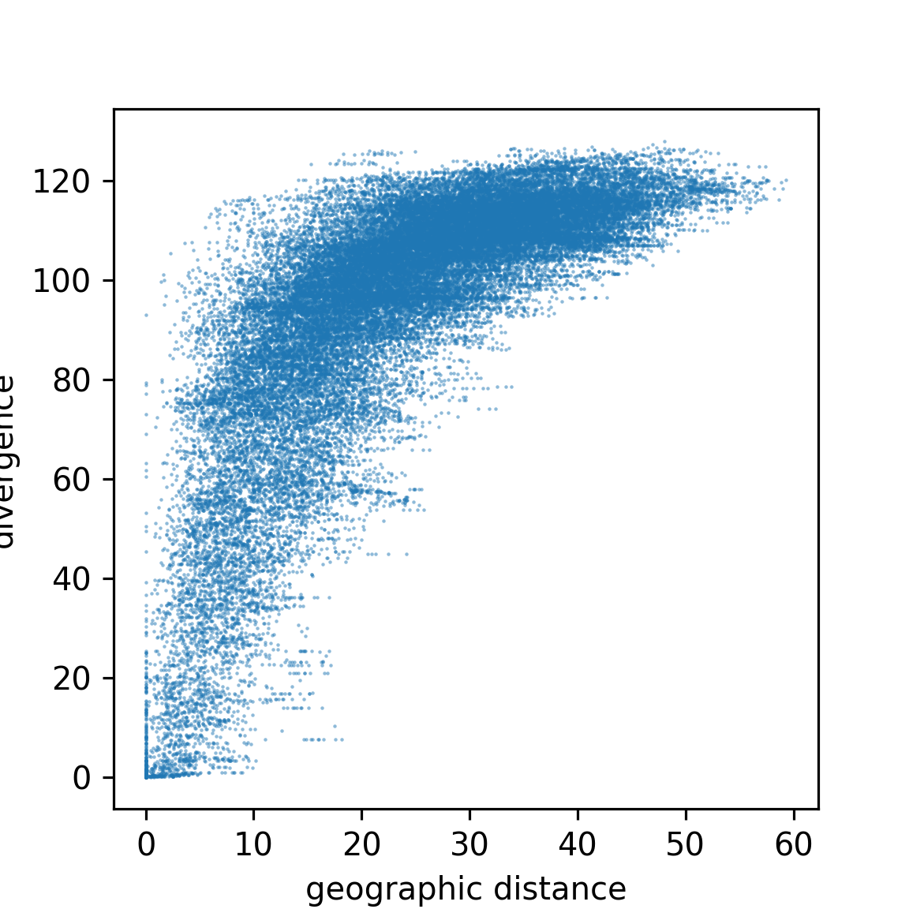

Space is the Place
PopSim // 4 November 2018 // CSHL
A related pain
Coalescent theory requires random mating in large populations, because:
- Lineages must move independently until the coalesce, and
- if we know one offspring came from a certain location,
- that location may be more likely to be the source of others.

We need forward simulation for realistic geography.


Interactions
Based on interaction kernels, e.g. \[ \rho(r) = \frac{1}{2 \pi \sigma^2} e^{- r^2 / 2 \sigma^2} \]
applied to the distance to the other individual.

Mate choice:
individual \(i\) chooses partner \(j\) at distance \(d_{ij}\) with probability proportional to \(\rho(d_{ij})\).

Dispersal:
offspring live near their parents.

Population regulation:
with local density \[ D = \sum_j \rho(d_{ij}) , \]
- survival,
- fecundity, and/or
- establishment
decrease with \(D\).

Can I do this yet?
Yes!!
In SLiM v3.1:
- nonWF modes
- spatial interactions
- geographic maps
- tree sequence recording
Next: heterogeneous dispersal?

Haller & Messer 2018: SLiM v3.1
Haller, Galloway, kelleher, Messer & Ralph 2018 bioRxiv:407783

CJ Battey

Andy Kern
\(\sigma_d = \sigma_i = 2\)


\(\sigma_d = 0.15\), \(\sigma_i = 0.5\)


\(\sigma_d = 0.25\), \(\sigma_i = 0.2\)


Approach to equilibrium